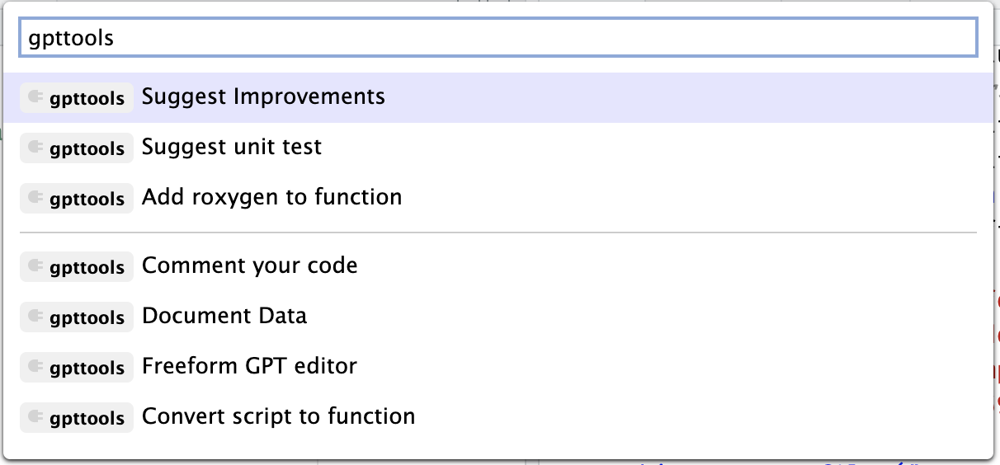

The goal of gpttools is to extend gptstudio for R package developers to more easily incorporate use of large language models (LLMs) into their project workflows. These models appear to be a step change in our use of text for knowledge work, but you should carefully consider ethical implications of using these models. Ethics of LLMs (also called Foundation Models) is an area of very active discussion.
If you like this package, you may also like {gptstudio}. This package is an extension of that one and maintained by the same developers.
Installation
Install from R-Universe
# Enable repository from jameshwade
options(repos = c(
jameshwade = "https://jameshwade.r-universe.dev",
CRAN = "https://cloud.r-project.org"
))
# Download and install gpttools in R
install.packages("gpttools")
# Browse the gpttools manual pages
help(package = "gpttools")Privacy Notice for use of OpenAI Models
These functions work by taking the text or code you have highlighted or selected with the cursor, or your prompt if you use one of the built-in apps, and send these to OpenAI as part of a prompt. Prompts fall under the privacy notice, rules, or exceptions you agreed to when making an OpenAI account. We cannot tell you or guarantee how secure these prompts are when sent to OpenAI. We do not know what OpenAI does with your prompts, but OpenAI is clear that they use prompts and results to improve their model unless you opt out explicitly by contacting them.
The code is designed to only share the highlighted or selected text, or a prompt you build with the help of one of our apps and no other elements of your R environment. Nonetheless, be sure you are aware of what you send to OpenAI and do not accidentally share sensitive data with OpenAI.
DO NOT HIGHLIGHT AND THEREFORE UPLOAD DATA, CODE, OR TEXT THAT SHOULD REMAIN PRIVATE
See OpenAI’s Terms of Use at https://openai.com/terms for more details.
Prerequisites
Make an OpenAI account. As of now, the free one will do.
Set the API key up in RStudio in one of two ways:
- By default, API calls will look for
OPENAI_API_KEYenvironment variable. If you want to set a global environment variable, you can use the following command, where"<APIKEY>"should be replaced with your actual key:
Sys.setenv(OPENAI_API_KEY = "<OPENAI_API_KEY>")- Alternatively, you can set the key in your .Renviron file.
Otherwise, you can add the key to the .Renviron file of the project. The following commands will open .Renviron for editing:
require(usethis)
edit_r_environ(scope = "project")You can add the following line to the file (again, replace <api_key> with your actual key):
OPENAI_API_KEY=<api_key>This now set the API key every time you start up this particular project. Note: If you are using GitHub/Gitlab, do not forget to add .Renviron to .gitignore!
Usage
The package has four addins:
Comment code: uses code-davinci-edit-001 model from OpenAI to add comments to your code with the prompt: “add comments to each line of code, explaining what the code does”
Add roxygen: uses text-davinci-003 model from OpenAI to add and fill out a roxygen skeleton to your highlight code (should be a function) with the prompt: “insert roxygen skeleton to document this function”
Convert script to function: uses code-davinci-edit-001 model from OpenAI to convert a highlighted script into a function with the prompt: “convert this R code into an R function”
Write a unit test for a function with testthat: uses text-davinci-003 model from OpenAI to suggest a unit test for a selected function with the prompt: “Suggest a unit text for this function using the testthat package”
A freeform addins that let’s you specify the prompt using the “edit” functionality of ChatGPT
You can access these addins through the addin toolbar or use the command pallet: CMD/CTRL+SHIFT+P. Examples of each of the addins in action is below.

Code of Conduct
Please note that the gpttools project is released with a Contributor Code of Conduct. By contributing to this project, you agree to abide by its terms.